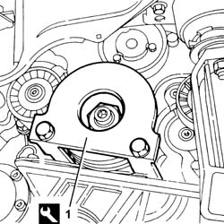
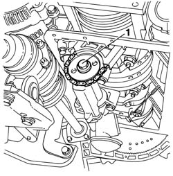
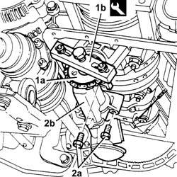

1084B16 engine oil pump - r+r vehicles with a/c
- Path
- Procedures > 10 ENGINE > 1084 ENGINE LUBRICATION SYSTEM > 1084B engine oil lubrication circuit > 1084B16 engine oil pump - r+r vehicles with a/c
- Kind
- repair procedure (removal / refitting; the operation number is the code)
- Applies to
- engines: 2.5 V6, 3.2 V6, 1.9 JTD 8v , 2.4 JTD 10v; all production periods
- Interactive page
- https://sloeber94.github.io/elrnDB-a156/en/#/3237613
Applies to: engines: 2.5 V6, 3.2 V6; all production periods
 Removing
Removing
 Refitting
Refitting4450B10 Front WHEEL (one) - R.R.
7055B64 Engine compartment DUST shield in front wheel arch (one), left or right - R.R.
7055B54 under-engine guard - r r
1092G10 single engine belt r r
1076B52 exhaust pipe (one) leaving l/h or r/h exhaust manifold - r + r
5510C34 rpm and timing sensor (single) - r+r
1020A20 crank case oil sump - r + r clean seals for sealant application
1. Fit the crankshaft lock.
 | Name | Country |
|---|---|---|
1 | Counter-torque for crankshaft | 1.870.646.000 |

Applies to: engines: 2.5 V6, 3.2 V6; all production periods
1. Undo the bolt fixing the chain drive to the oil pump.

Applies to: engines: 2.5 V6, 3.2 V6; all production periods
1. Move the chain drive (1a) away from the oil pump using the tool (1b).
| Name | Country |
|---|---|---|
1b | Extractor | 1.860.954.001 |
2. Undo the bolts (2a) and remove the engine oil pump (2b).

Applies to: engines: 2.5 V6, 3.2 V6; all production periods
Refitting
RemovingFit the oil pump and fix it using the bolts.
Position the chain drive on the oil pump shaft and fix it tightening the bolt to the recommended torque.
 | Fastening | Component | Ø | Value (daNm) |
|---|---|---|---|---|
- | Bolt | ENGINE OIL PUMP DRIVE CHAIN | M10 | 4.3 ÷ 5.3 |
Remove the crankshaft lock.
| Name | Country |
|---|---|---|
- | Counter-torque for crankshaft | 1.870.646.000 |
1020A20 crank case oil sump - r + r clean seals for sealant application
5510C34 rpm and timing sensor (single) - r+r
1076B52 exhaust pipe (one) leaving l/h or r/h exhaust manifold - r + r
1092G10 single engine belt r r
7055B54 under-engine guard - r r
7055B64 Engine compartment DUST shield in front wheel arch (one), left or right - R.R.
Applies to: engines: 1.9 JTD 8v , 2.4 JTD 10v; all production periods
Topics linked from this page (8)
- 1020A20 crank case oil sump - r + r clean seals for sealant application
- 1020D14 front crank shaft oil seal cover - r + r and replace seals for versions with oil pump on crank shaft, timing side
- 1076B52 exhaust pipe (one) leaving l/h or r/h exhaust manifold - r + r
- 1092G10 single engine belt r r
- 4450B10 Front WHEEL (one) - R.R.
- 5510C34 rpm and timing sensor (single) - r+r
- 7055B54 under-engine guard - r r
- 7055B64 Engine compartment DUST shield in front wheel arch (one), left or right - R.R.